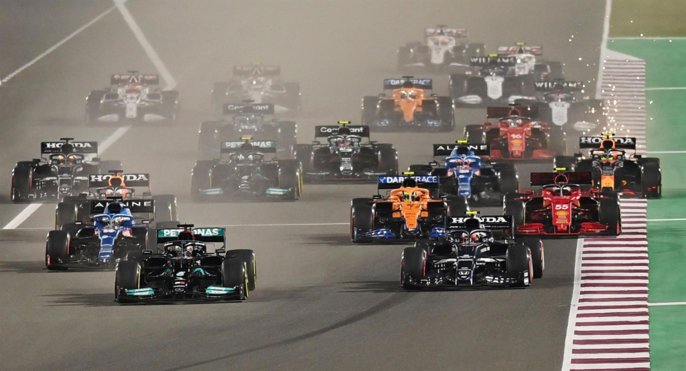
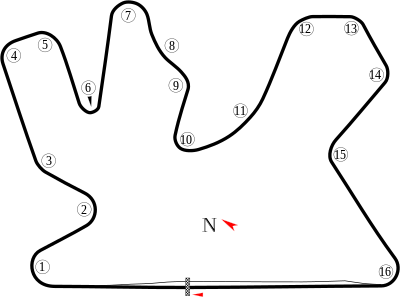

NAVEGUE
Home
Pilotos
Calendário/Tabela
Grand Prix
Construtoras
Últimas Notícias
GP do Catar
SOBRE
A pista do Catar, também conhecida como Circuito Internacional de Losail, é um circuito de corrida localizado na cidade de Lusail, no Catar. Foi inaugurada em 2004 e tem 5,4 km de extensão, com 16 curvas. A pista é conhecida por ser a primeira corrida noturna do calendário da MotoGP e por ter uma das retas mais longas do mundo, com cerca de 1,1 km de comprimento. Além disso, a pista é cercada pelo deserto do Catar, o que a torna uma das mais exóticas do calendário da categoria. A primeira corrida da MotoGP na pista do Catar aconteceu em 2004 e desde então tem sido um dos destaques do calendário da categoria.
Circuitos Utilizados
Losail

INFORMAÇÕES DA CORRIDA

Localização
Lusail, Catar
Voltas
57
Percurso
5.38 km
Total
306.660 km
Curvas
16
Pole
Lewis Hamilton
Anos Disputados
1
Última Disputa
2021
Maior vencedor
Lewis Hamilton
Última Corrida - Pódio
Lewis Hamilton